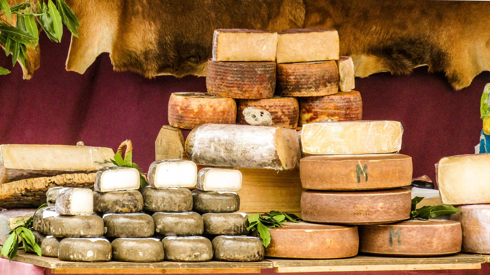

1.分類
学名︰Ovis arie
ウシ科ヤギ亜科の鯨偶蹄目である。角をもち、主に羊毛のために家畜化されている。
ヒツジは羊毛や肉（ラム、マトン）を目的として世界中で広く飼育され、2008年には全世界で10億頭を超えるヒツジが飼育されていた。世界で最もヒツジを多く飼育しているのは中国で、1億3000万頭以上に上る。
2.身体的特徴
ヒツジは反芻動物としては比較的体は小さく、側頭部のらせん形の角と、羊毛と呼ばれる縮れた毛をもつ。原始的な品種では、短い尾など、野生種の特徴を残すものもある。品種によってまったく角をもたないもの、雄雌両方にあるもの、雄だけが角を持つものがある。
野生のヒツジの上毛の色合いには幅広いバリエーションがあり、黒、赤、赤褐色、赤黄色、褐色などがある。毛用のヒツジは主に染色に適した白い羊毛を産するように改良が加えられているが、ほかにも純白から黒色まであり、斑模様などもある。白いヒツジの群れのなかに有色の個体が現れることもある。
ヒツジの体長や体重は品種により大きく異なり、雌の体重はおよそ45～100kg、雄はより大きくて45～160kgである。
3.生態的特徴
ヒツジの聴力はよい。また視力については、水平に細い瞳孔を持ち、優れた周辺視野をもつ。視野は 270–320°で、頭を動かさずに自分の背後を見ることができる。しかし、奥行きはあまり知覚できず、影や地面のくぼみにひるんで先に進まなくなることがある。
ヒツジは非常に群れたがる性質をもち、群れから引き離されると強いストレスを受ける。また、先導者に従う傾向がとても強い（その先導者はしばしば単に最初に動いたヒツジであったりもする）。これらの性質は家畜化されるにあたり極めて重要な要素であった。なお、捕食者がいない地域の在来種は、強い群れ行動をおこさない。
4.食性／繁殖
食性
草だけでなく、樹皮や木の芽、花も食べる。食草の採食特性は幅広いとされる。
繁殖
通常は、妊娠期間150日ぐらいで仔を1頭だけ産むが、2頭あるいは3頭産むときもある。
5.生息分布
砂漠や山岳地帯など、さまざまな環境に適応した固有の種がある。家畜用のヒツジは、毛用種、肉用種、乳用種に大別されるが、代表種のメリノをはじめ、兼用の品種も多い。
6.起源／歴史
新石器時代から野生の大型ヒツジの狩猟がおこなわれていた形跡がある。家畜化が始まったのは古代メソポタミアで、紀元前7000～6000年ごろの遺跡からは野生ヒツジとは異なる小型のヒツジの骨が大量に出土しており、最古のヒツジの家畜化の証拠と考えられている。
日本列島には古来より、旧石器・縄文時代のイヌや弥生時代のブタ・ニワトリ、古墳時代のウマ・ウシなど家畜を含め様々なものが海を越えて伝わったが、羊の飼育及び利用の記録は乏しい。寒冷な土地も多く防寒用に羊毛が利用される下地はあったが、動物遺体の出土事例も報告されていないことから、ほとんど伝わらなかったものと考えられている。
※チーズ※フリース